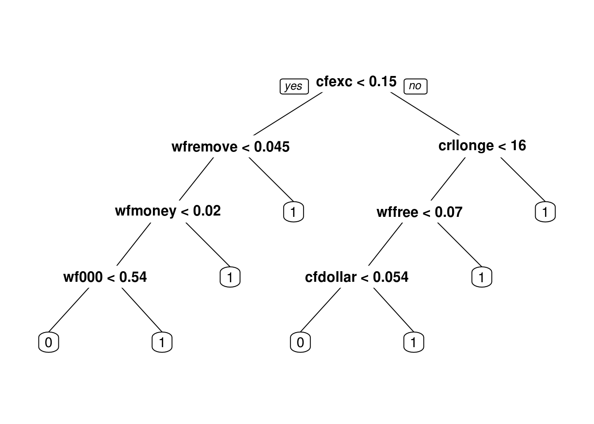
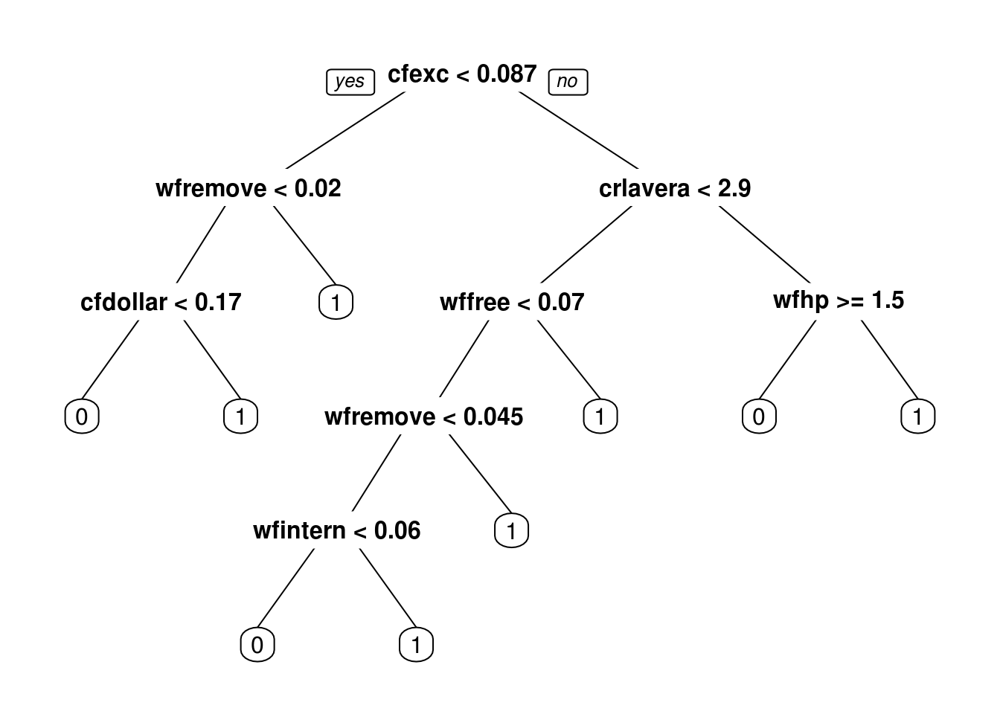

Clase 11 Métodos basados en árboles
11.1 Árboles para regresión y clasificación.
La idea básica de los árboles es buscar puntos de cortes en las variables de entrada para hacer predicciones, ir dividiendo la muestra, y encontrar cortes sucesivos para refinar las predicciones.
Ejemplo
Buscamos clasificar hogares según su ingreso, usando como entradas características de los hogares. Podríamos tener, por ejemplo:
knitr::include_graphics('./imagenes/arboles_1.png')
- Con este árbol podemos clasificar nuevos hogares.
- Nótese que los árboles pueden capturar interacciones entre las variables de entradas. En nuestro ejemplo ficticio, “automóvil” nos da información acerca del ingreso, pero solo caundo el nivel de educación del jefe de familia es bajo. (Ejercicio: si el ingreso fuera una cantidad numérica, ¿cómo escribirías este modelo con una suma de términos que involucren las variables mostradas en el diagrama?)
- Árboles también pueden aproximar relaciones no lineales entre entradas y variable de salida (es similar a los ejemplos donde haciamos categorización de variables de entrada).
- Igual que en redes neuronales, en lugar de buscar puntos de corte o interacciones a mano, con los árboles intentamos encontrarlos de manera automática.
11.1.1 Árboles para clasificación
Un árbol particiona el espacio de entradas en rectángulos paralelos a los ejes, y hace predicciones basadas en un modelo simple dentro de cada una de esas particiones.
Por ejemplo:
knitr::include_graphics('./imagenes/arboles_2.png')
- El proceso de partición binaria recursiva (con una entrada a la vez) puede representarse mediante árboles binarios.
- Los nodos terminales representan a la partición obtenida.
Para definir el proceso de construcción de los árboles, debemos definir:
- ¿Cómo escoger las particiones? Idea: buscar hacer los nodos sucesivamente más puros (que una sola clase domine).
- ¿Cuándo declarar a un nodo como terminal? ¿Cuándo particionar más profundamente? Idea: dependiendo de la aplicación, buscamos hacer árboles chicos, o en otras árboles grandes que después podamos para no sobreajustar.
- ¿Cómo hacer predicciones en nodos terminales? Idea: escoger la clase más común en cada nodo terminal (la de máxima probabilidad).
11.1.2 Tipos de partición
Supongamos que tenemos variables de entrada \((X_1,\ldots, X_p)\). Recursivamente particionamos cada nodo escogiendo entre particiones tales que:
- Dependen de una sola variable de entrada \(X_i\)
- Si \(X_i\) es continua, la partición es de la forma \(\{X_i\leq c\},\{X_i> c\}\), para alguna \(c\) (punto de corte)
- Si \(X_i\) es categórica, la partición es de la forma \(\{X_i\in S\},\{X_i\notin S\}\), para algún subconjunto \(S\) de categorías de \(X_i\).
- En cada nodo candidato, escogemos uno de estos cortes para particionar.
¿Cómo escogemos la partición en cada nodo? En cada nodo, la partición se escoge de una manera miope o local, intentando separar las clases lo mejor que se pueda (sin considerar qué pasa en cortes hechos más adelante). En un nodo dado, escogemos la partición que reduce lo más posible su impureza:
11.1.3 Medidas de impureza
Consideramos un nodo \(t\) de un árbol \(T\), y sean \(p_1(t),\ldots, p_K(t)\) las proporciones de casos de \(t\) que caen en cada categoría.
11.1.3.1 Ejemplo
Graficamos la medida de impureza para dos clases:
impureza <- function(p){
-(p*log(p) + (1-p)*log(1-p))
}
curve(impureza, 0,1)
Donde vemos que la máxima impureza se alcanza cuando las proporciones de clase en un nodo so 50-50, y la mínima impureza (máxima pureza) se alcanza cuando en el nodo solo hay casos de una clase. Nótese que esta cantidad es proporcional a la devianza del nodo, donde tenemos porbabilidad constante de clase 1 igual a \(p\).
11.1.4 Reglas de partición y tamaño del árobl
Podemos escribir la regla de partición, que se aplica a cada nodo de un árbol
Ejemplo
Consideremos un nodo \(t\), cuyos casos de entrenamiento son:
n_t <- c(200,100, 150)
impureza <- function(p){
-sum(p*log(p))
}
impureza(n_t/sum(n_t))## [1] 1.060857Y comparamos con
n_t <- c(300,10, 140)
impureza <- function(p){
p <- p[p>0]
-sum(p*log(p))
}
impureza(n_t/sum(n_t))## [1] 0.7181575Ahora supongamos que tenemos un posible cortes, el primero resulta en
n_t <- c(300,10, 140)
n_1 = c(300,0,0)
n_2 = c(0,10,140)
(sum(n_1)/sum(n_t))*impureza(n_1/sum(n_1)) + (sum(n_2)/sum(n_t))*impureza(n_2/sum(n_2))## [1] 0.08164334Un peor corte es:
n_t <- c(300,10, 140)
n_1 = c(200,0,40)
n_2 = c(100,10,100)
(sum(n_1)/sum(n_t))*impureza(n_1/sum(n_1)) + (sum(n_2)/sum(n_t))*impureza(n_2/sum(n_2))## [1] 0.6377053Lo que resta explicar es qué criterio de paro utilizamos para dejar de particionar.
Regla de paro Cuando usemos árboles en ótros métodos, generalmente hay dos opciones:
- Particionar hasta cierta profundidad fija (por ejemplo, máximo 8 nodos terminales). Este enfoque generalmente usa árboles relativamente chicos (se usa en boosting de árboles).
- Dejar de particionar cuando encontramos un número mínimo de casos en un nodo (por ejemplo, 5 o 10 casos). Este enfoque resulta en árboles grandes, probablemente sobreajustados (se usa en bosques aleatorios).
Y cuando utilizamos los árboles por sí solos para hacer predicciones:
- Podemos probar distintos valores de tamaño de árbol, y escogemos por validación (muestra o cruzada) el tamaño final.
- Podemos usar el método CART de Breiman, que consiste en construir un árbol grande y luego podar al tamaño correcto.
Ejemplo
Construímos algunos árboles con los datos de spam:
library(rpart)
library(rpart.plot)
library(ggplot2)
library(dplyr)
library(tidyr)
spam_entrena <- read.csv('./datos/spam-entrena.csv')
spam_prueba <- read.csv('./datos/spam-prueba.csv')
head(spam_entrena)## X wfmake wfaddress wfall wf3d wfour wfover wfremove wfinternet wforder
## 1 1 0.00 0.57 0.00 0 0.00 0 0 0 0.00
## 2 2 1.24 0.41 1.24 0 0.00 0 0 0 0.00
## 3 3 0.00 0.00 0.00 0 0.00 0 0 0 0.00
## 4 4 0.00 0.00 0.48 0 0.96 0 0 0 0.48
## 5 5 0.54 0.00 0.54 0 1.63 0 0 0 0.00
## 6 6 0.00 0.00 0.00 0 0.00 0 0 0 0.00
## wfmail wfreceive wfwill wfpeople wfreport wfaddresses wffree wfbusiness
## 1 0 0.57 0.57 1.15 0 0 0.00 0.00
## 2 0 0.00 0.41 0.00 0 0 0.41 0.00
## 3 0 0.00 0.00 0.00 0 0 0.00 0.00
## 4 0 0.00 0.00 0.00 0 0 0.96 0.96
## 5 0 0.00 0.54 0.00 0 0 0.54 0.54
## 6 0 0.00 0.00 0.00 0 0 0.00 0.00
## wfemail wfyou wfcredit wfyour wffont wf000 wfmoney wfhp wfhpl wfgeorge
## 1 1.73 3.46 0 1.15 0 0.00 0.00 0 0 0.0
## 2 0.82 3.73 0 1.24 0 0.00 0.41 0 0 0.0
## 3 0.00 12.19 0 4.87 0 0.00 9.75 0 0 0.0
## 4 0.00 1.44 0 0.48 0 0.96 0.00 0 0 0.0
## 5 0.00 2.17 0 5.97 0 0.54 0.00 0 0 0.0
## 6 0.00 5.00 0 0.00 0 0.00 0.00 0 0 2.5
## wf650 wflab wflabs wftelnet wf857 wfdata wf415 wf85 wftechnology wf1999
## 1 0 0 0 0 0 0 0 0 0 0
## 2 0 0 0 0 0 0 0 0 0 0
## 3 0 0 0 0 0 0 0 0 0 0
## 4 0 0 0 0 0 0 0 0 0 0
## 5 0 0 0 0 0 0 0 0 0 0
## 6 0 0 0 0 0 0 0 0 0 0
## wfparts wfpm wfdirect wfcs wfmeeting wforiginal wfproject wfre wfedu
## 1 0 0 0 0 0 0 0 0.00 0
## 2 0 0 0 0 0 0 0 0.41 0
## 3 0 0 0 0 0 0 0 0.00 0
## 4 0 0 0 0 0 0 0 0.48 0
## 5 0 0 0 0 0 0 0 0.00 0
## 6 0 0 0 0 0 0 0 0.00 0
## wftable wfconference cfsc cfpar cfbrack cfexc cfdollar cfpound
## 1 0 0 0 0.000 0.000 0.107 0.000 0.000
## 2 0 0 0 0.065 0.000 0.461 0.527 0.000
## 3 0 0 0 0.000 0.000 0.000 0.000 0.000
## 4 0 0 0 0.133 0.066 0.468 0.267 0.000
## 5 0 0 0 0.000 0.000 0.715 0.318 0.000
## 6 0 0 0 0.000 0.000 0.833 0.000 0.416
## crlaverage crllongest crltotal spam
## 1 1.421 7 54 1
## 2 3.166 19 114 1
## 3 1.000 1 7 0
## 4 3.315 61 242 1
## 5 2.345 22 129 1
## 6 1.937 8 31 0Podemos construir un árbol grande. En este caso, buscamos que los nodos resultantes tengan al menos un caso y para particionar pedimos que el nodo tenga al menos 10 casos:
set.seed(22)
control_completo <- rpart.control(cp=0,
minsplit=10,
minbucket=1,
xval=10,
maxdepth=30)
spam_tree_completo<-rpart(spam ~ ., data = spam_entrena, method = "class",
control = control_completo)
prp(spam_tree_completo, type=4, extra=4)## Warning: labs do not fit even at cex 0.15, there may be some overplotting
Podemos examinar la parte de arriba del árbol:
arbol.chico.1 <- prune(spam_tree_completo, cp=0.07)
prp(arbol.chico.1, type = 4, extra = 4)
Podemos hacer predicciones con este árbol grande. Por ejemplo, en entrenamiento tenemos:
prop_clase <- predict(spam_tree_completo, newdata = spam_entrena)
table(prop_clase[,2]>0.5, spam_entrena$spam )##
## 0 1
## FALSE 1835 34
## TRUE 26 1172y en prueba:
prop_clase <- predict(spam_tree_completo, newdata = spam_prueba)
tab_confusion <- table(prop_clase[,2]>0.5, spam_prueba$spam )
prop.table(tab_confusion, 2)##
## 0 1
## FALSE 0.90507012 0.11202636
## TRUE 0.09492988 0.88797364Y notamos la brecha grande entre prueba y entrenamiento, lo que sugiere sobreajuste. Este árbol es demasiado grande.
11.1.5 Costo - Complejidad (Breiman)
Una manera de escoger árboles del tamaño correcto es utilizando una medida inventada por Breiman para medir la calidad de un árbol. La complejidad de un árbol \(T\) está dada por (para \(\alpha\) fija):
\[C_\alpha (T) = \overline{err}(T) + \alpha \vert T\vert\] donde
- \(\overline{err}(T)\) es el error de clasificación de \(T\)
- \(\vert T\vert\) es el número de nodos terminales del árbol
- \(\alpha>0\) es un parámetro de penalización del tamaño del árbol.
Este medida de complejidad incluye qué tan bien clasifica el árbol en la muestra de entrenamiento, pero penaliza por el tamaño del árbol.
Para escoger el tamaño del árbol correcto, definimos \(T_\alpha \subset T\) como el subárbol de \(T\) que minimiza la medida \(C_\alpha (T_\alpha)\).
Para entender esta decisión, obsérvese que:
- Un subárbol grande de \(T\) tiene menor valor de \(\overline{err}(T)\) (pues usa más cortes)
- Pero un subárbol grande de \(T\) tiene más penalización por complejidad \(\alpha\vert T\vert\).
De modo que para \(\alpha\) fija, el árbol \(T_\alpha\) hace un balance entre error de entrenamiento y penalización por complejidad.
11.1.5.1 Ejemplo
Podemos ver subárboles más chicos creados durante el procedimiento de división de nodos (prp está el paquete rpart.plot). En este caso pondemos \(\alpha = 0.2\) (cp = \(\alpha\) = complexity parameter):
arbol.chico.1 <- prune(spam_tree_completo, cp=0.2)
prp(arbol.chico.1, type = 4, extra = 4)
Si disminuimos el coeficiente \(alpha\).
arbol.chico.1 <- prune(spam_tree_completo, cp=0.07)
prp(arbol.chico.1, type = 4, extra = 4)
y vemos que en efecto el árbol \(T_{0.07}\) contiene al árbol \(T_{0.2}\), y ambos son subárboles del árbol gigante que construimos al principio.
Nota: Esto es un teorema que hace falta demostrar: el resultado principal es que conforme aumentamos \(\alpha\), vamos eliminiando ramas del árbol, de manera que los
arbol.chico.1 <- prune(spam_tree_completo, cp=0.05)
prp(arbol.chico.1, type = 4, extra = 4)
arbol.chico.1 <- prune(spam_tree_completo, cp=0.02)
prp(arbol.chico.1, type = 4, extra = 4)
source('./scripts/fancyRpartPlot.R')
fancyRpartPlot(arbol.chico.1, sub='')## Loading required package: RColorBrewer
Nota: Enfoques de predicción basados en solo árbol para clasificación y regresión son típicamente superados en predicción por otros métodos. ¿Cuál crees que sea la razón? ¿Es un problema de varianza o sesgo?
11.1.6 (Opcional) Predicciones con CART
Podemos hacer predicciones con un sólo árbol. En el caso de spam, haríamos
spam_tree <-rpart(spam ~ ., data = spam_entrena,
method = "class", control=list(cp=0,
minsplit=5,minbucket=1))Ahora mostramos los resultados de cada árbol para cada valor de \(\alpha\). La siguiente función nos da una estimación de validación cruzada del error:
printcp(spam_tree)##
## Classification tree:
## rpart(formula = spam ~ ., data = spam_entrena, method = "class",
## control = list(cp = 0, minsplit = 5, minbucket = 1))
##
## Variables actually used in tree construction:
## [1] cfbrack cfdollar cfexc cfpar cfsc
## [6] crlaverage crllongest crltotal wf1999 wf3d
## [11] wf650 wfaddress wfall wfbusiness wfconference
## [16] wfcredit wfdata wfdirect wfedu wfemail
## [21] wffont wffree wfgeorge wfhp wfhpl
## [26] wfinternet wflabs wfmail wfmake wfmeeting
## [31] wfmoney wforder wforiginal wfour wfover
## [36] wfpeople wfpm wfproject wfre wfreceive
## [41] wfremove wfreport wftechnology wfwill wfyou
## [46] wfyour X
##
## Root node error: 1206/3067 = 0.39322
##
## n= 3067
##
## CP nsplit rel error xerror xstd
## 1 0.49087894 0 1.000000 1.00000 0.022431
## 2 0.13681592 1 0.509121 0.54975 0.018903
## 3 0.05223881 2 0.372305 0.45605 0.017616
## 4 0.03980100 3 0.320066 0.35489 0.015912
## 5 0.03150912 4 0.280265 0.33582 0.015546
## 6 0.01160862 5 0.248756 0.30265 0.014869
## 7 0.01077944 6 0.237148 0.28192 0.014417
## 8 0.00663350 7 0.226368 0.26866 0.014115
## 9 0.00497512 9 0.213101 0.25622 0.013822
## 10 0.00414594 18 0.166667 0.23051 0.013184
## 11 0.00331675 20 0.158375 0.22886 0.013141
## 12 0.00276396 24 0.145108 0.21973 0.012902
## 13 0.00248756 27 0.136816 0.21808 0.012858
## 14 0.00165837 31 0.126036 0.21393 0.012746
## 15 0.00130301 44 0.104478 0.20149 0.012403
## 16 0.00124378 52 0.092869 0.20232 0.012426
## 17 0.00118455 54 0.090381 0.20232 0.012426
## 18 0.00110558 61 0.082090 0.20398 0.012473
## 19 0.00082919 67 0.075456 0.20481 0.012496
## 20 0.00066335 100 0.048093 0.21476 0.012769
## 21 0.00041459 107 0.043118 0.22471 0.013033
## 22 0.00033167 121 0.037313 0.23632 0.013332
## 23 0.00031095 126 0.035655 0.23549 0.013311
## 24 0.00027640 140 0.029851 0.23383 0.013269
## 25 0.00020730 146 0.028192 0.23383 0.013269
## 26 0.00010365 150 0.027363 0.23466 0.013290
## 27 0.00000000 158 0.026534 0.23466 0.013290Y usamos la regla de mínimo error o a una desviación estándar del error mínimo:
arbol_podado <- prune(spam_tree, cp = 0.00276396)
prp(arbol_podado)
Cuyo error de predicción es:
probs_clase <- predict(arbol_podado, newdata=spam_prueba)
head(probs_clase)## 0 1
## 1 0.03621170 0.96378830
## 2 0.03621170 0.96378830
## 3 0.05181347 0.94818653
## 4 0.94941394 0.05058606
## 5 0.03621170 0.96378830
## 6 0.03621170 0.96378830prop.table(table((probs_clase[,2]>0.5),spam_prueba$spam),2)##
## 0 1
## FALSE 0.94929881 0.14827018
## TRUE 0.05070119 0.8517298211.1.7 Árboles para regresión
Para problemas de regresión, el criterio de pureza y la predicción en cada nodo terminal es diferente:
- En los nodos terminales usamos el promedio los casos de entrenamiento que caen en tal nodo (en lugar de la clase más común)
- La impureza de define como varianza: si \(t\) es un nodo, su impureza está dada por $(y - m)^2, donde la suma es sobre los casos que están en el nodo y \(m\) es la media de las \(y\)’s del nodo.
11.1.8 Variabilidad en el proceso de construcción
Existe variabilidad considerable en el proceso de división, lo cual es una debilidad de los árboles. Por ejemplo:
muestra.1 <- spam_entrena[sample(1:nrow(spam_entrena), nrow(spam_entrena), replace=T), ]
spam.tree.completo.1 <-rpart(spam ~ ., data = muestra.1, method = "class",
control = control_completo)
arbol.chico.1 <- prune(spam.tree.completo.1, cp=0.03)
prp(arbol.chico.1, type = 4, extra = 4)
muestra.1 <- spam_entrena[sample(1:nrow(spam_entrena), nrow(spam_entrena), replace=T), ]
spam.tree.completo.1 <-rpart(spam ~ ., data = muestra.1, method = "class",
control = control_completo)
arbol.chico.1 <- prune(spam.tree.completo.1, cp=0.03)
prp(arbol.chico.1, type = 4, extra = 4)
Pequeñas diferencias en la muestra de entrenamiento produce distintas selecciones de variables y puntos de corte, y estructuras de árboles muchas veces distintas. Esto introduce varianza considerable en las predicciones.
11.1.9 Relaciones lineal
Los árboles pueden requerir ser muy grandes para estimar apropiadamente relaciones lineales.
x <- runif(200,0,1)
y <- 2*x + rnorm(200,0,0.1)
arbol <- rpart(y~x, data=data_frame(x=x, y=y), method = 'anova')
x_pred <- seq(0,1,0.05)
y_pred <- predict(arbol, newdata = data_frame(x=x_pred))
y_verdadera <- 2*x_pred
dat <- data_frame(x_pred=x_pred, y_pred=y_pred, y_verdadera=y_verdadera) %>% gather(y, valor, y_pred:y_verdadera)
ggplot(dat, aes(x=x_pred, y=valor, colour=y)) + geom_line()
11.1.10 Ventajas y desventajas de árboles
Ventajas:
- Árboles chicos son fáciles de explicar e interpretar
- Capturan interacciones entre las variables de entrada
- Son robustos en el sentido de que
- valores numéricos atípicos no hacen fallar al método
- no es necesario transformar variables
- hay formas fáciles de lidiar con datos faltantes (cortes sucedáneos)
- Se ajustan rápidamente yson relativamente fácilmente de interpretar (por ejemplo, son útiles para clasificar en campo)
- Árboles grandes generalmente no sufren de sesgo.
Desventajas:
- Tienen dificultades en capturar estructuras lineales
- En la interpretación, tienen la dificultad de que muchas veces algunas variables de entrada “enmascaran” a otras. Que una variable de entrada no esté en el árbol no quiere decir que nosea “importante” para predecir (regresión ridge lidia mejor con esto).
- Son inestables (varianza alta) por construcción: es local/miope, basada en cortes duros si/no. Esto produce desempeño predictivo relativamente malo (p ej: una pequeña diferencia en cortes iniciales puede resultar en estructuras de árbol totalmente distintas).
- Adicoinalmente, no son apropiados cuando hay variables categóricas con muchas niveles: en estos casos, el árbol sobreajusta desde los primeros cortes, y las predicciones son malas.
11.2 Bosques aleatorios.
Bosques aleatorios es un método de predicción que utiliza familias de árboles para hacer predicciones.
Los árboles grandes tienen la ventaja de tener sesgo bajo, pero sufren de varianza alta. Podemos explotar el sesgo bajo si logramos controlar la varianza. Una idea primera para lograr esto es es hacer bagging de árboles:
- Perturbar la muestra de entrenamiento de distintas maneras y producir árboles distintos (grandes). La perturbación más usada es tomar muestras bootstrap de los datos y ajustar un árbol a cada muestra bootstrap
- Promediar el resultado de todos estos árboles para hacer predicciones. El proceso de promediar reduce la varianza, sin tener pérdidas en sesgo.
11.2.1 Bagging de árboles
La idea básica de bagging (bootstrap aggregation) es la siguiente:
Consideramos el proceso \({\mathcal L} \to T_{\mathcal L}\), que representa el proceso de ajuste de un árbol \(T_{\mathcal L}\) a partir de la muestra de entrenamiento \({\mathcal L}\). Si pudiéramos obtener distintas muestras de entrenamiento \[{\mathcal L}_1, {\mathcal L}_2, \ldots, {\mathcal L}_B,\] y supongamos que construimos los árboles (que suponemos de regresión) \[T_1, T_2, \ldots, T_B,\] Podríamos mejorar nuestras predicciones construyendo el árbol promedio \[T(x) = \frac{1}{B}\sum_{i=b}^B T_b (x)\] ¿Por qué es mejor este árbol promedio que cualquiera de sus componentes? Veamos primero el sesgo. El valor esperado del árbol promedio es \[E[T(x)] = \frac{1}{B}\sum_{i=b}^B E[T_b (x)]\] y como cada \(T_b(x)\) se construye de la misma manera a partir de \({\mathcal L}_b\), y todas las muestras \({\mathcal L}_b\) se extraen de la misma forma, todos los términos de la suma de la derecha son iguales: \[E[T(x)] = E[T_1 (x)],\] lo que implica que el sesgo del promedio es igual al sesgo de un solo árbol (que es bajo, pues suponemos que los árboles son grandes).
Ahora veamos la varianza,
\[Var[T(x)] = \frac{1}{B^2}\sum_{i=b}^B Var[T_b (x)],\] pues las muestras\({\mathcal L}_b\) se extraen de manera independiente (si esto no fuera cierto, entonces esta ecuación no es válida). Por las mismas razones que arriba, todos los términos de la derecha son iguales, y \[Var[T(x)] = \frac{1}{B}\ Var[T_1 (x)]\] de modo que la varianza del árbol promedio es mucho más chica que la varianza de un árbol dado (si \(B\) es grande).
Sin embargo, no podemos tomar muestras de entrenamiento repetidamente para ajustar estos árboles. ¿Cómo podemos simular extraer distintas muestras de entrenamiento? Sabemos que si tenemos una muestra de entrenamiento fija \({\mathcal L}\), podemos evaluar la variación de esta muestra tomando muestras bootstrap de \({\mathcal L}\), que denotamos por
\[{\mathcal L}_1^*, {\mathcal L}_2^*, \ldots, {\mathcal L}_B^*,\] si construimos los árboles (que suponemos de regresión) \[T_1^*, T_2^*, \ldots, T_B^*,\] podríamos mejorar nuestras predicciones construyendo el árbol promedio \[T^*(x) = \frac{1}{B}\sum_{i=b}^B T_b^* (x)\] El argumento del sesgo aplica en este caso, pero el de la varianza no exactamente, pues las muestras bootstrap no son independientes (están correlacionadas a través de la muestra de entrenamiento de donde se obtuvieron),a pesar de que las muestras bootstrap se extraen de manera independiente de \({\mathcal L}\). De esta forma, no esperamos una reducción de varianza tan grande como en el caso de muestras independientes.
Bagging Sea \({\mathcal L} =\{(x^{(i)}, y^{(i)})\}_{i=1}^n\) una muestra de entrenamiento, y sean \[{\mathcal L}_1^*, {\mathcal L}_2^*, \ldots, {\mathcal L}_B^*,\] muestras bootstrap de \({\mathcal L}\) (muestreamos con reemplazo los pares \((x^{(i)}, y^{(i)})\), para obtener una muestra de tamaño \(n\)).
- Para cada muestra bootstrap construimos un árbol \[{\mathcal L}_b^* \to T_b^*\].
- (Regresión) Promediamos árboles para reducir varianza \[T^*(x) = \frac{1}{B}\sum_{i=b}^B T_b^*(x)\]
- (Clasificación) Tomamos votos sobre todos los árboles: \[T^*(x) = argmax_g \{ \# \{i|T_b^*(x)=g\}\}.\] Podemos también calcular probabilidades promedio sobre todos los árboles.
Nota: No hay garantía de bagging reduzca el error de entrenamiento, especialmente si los árboles base son muy malos clasificadores ¿Puedes pensar en un ejemplo donde empeora?
Ejemplo
Probemos con el ejemplo de spam. Construimos árboles con muestras bootstrap de los datos originales de entrenamiento:
muestra_bootstrap <- function(df){
df %>% sample_n(nrow(df), replace = TRUE)
}
arboles_bagged <- lapply(1:30, function(i){
muestra <- muestra_bootstrap(spam_entrena)
arbol <- rpart(spam ~ ., data = muestra,
method = "class", control=list(cp=0,
minsplit=5,minbucket=1))
arbol
})Examinemos la parte de arriba de algunos de estos árboles:
prp(prune(arboles_bagged[[1]], cp =0.01))
prp(prune(arboles_bagged[[2]], cp =0.01))
prp(prune(arboles_bagged[[3]], cp =0.01)) Ahora probemos hacer predicciones con los 30 árboles:
library(purrr)
preds_clase <- lapply(arboles_bagged, function(arbol){
preds <- predict(arbol, newdata = spam_prueba)[,2]
})
preds <- preds_clase %>% reduce(cbind)
dim(preds)## [1] 1534 30preds_bag <- apply(preds, 1, mean)
prop.table(table(preds_bag > 0.5, spam_prueba$spam),2)##
## 0 1
## FALSE 0.96224380 0.09555189
## TRUE 0.03775620 0.90444811Y vemos que tenemos una mejora inmediata con respecto un sólo árbol grande (tanto un árbol grande como uno podado con costo-complejidad). El único costo es el cómputo adicional para procesar las muestras bootstrap
- ¿Cuántas muestras bootstrap? Bagging generalmente funciona mejor cuando tomamos tantas muestras como sea razonable - aunque también es un parámetro que se puede afinar.
- Bagging por sí solo se usa rara vez. El método más potente es bosques aleatorios, donde e proceso básico es bagging de árboles, pero añadimos ruido adicional en la construcción de árboles.
Breiman, Leo. 2001. “Statistical Modeling: The Two Cultures (with Comments and a Rejoinder by the Author).” Statist. Sci. 16 (3). The Institute of Mathematical Statistics: 199–231. doi:10.1214/ss/1009213726.
Goodfellow, Ian, Yoshua Bengio, and Aaron Courville. 2016. Deep Learning. MIT Press.
James, Gareth, Daniela Witten, Trevor Hastie, and Robert Tibshirani. 2014. An Introduction to Statistical Learning: With Applications in R. Springer Publishing Company, Incorporated. http://www-bcf.usc.edu/~gareth/ISL/.
Ng, Andrew. 2017. “Machine Learning.” https://www.coursera.org/learn/machine-learning.
Srivastava, Nitish, Geoffrey Hinton, Alex Krizhevsky, Ilya Sutskever, and Ruslan Salakhutdinov. 2014. “Dropout: A Simple Way to Prevent Neural Networks from Overfitting.” J. Mach. Learn. Res. 15 (1). JMLR.org: 1929–58. http://dl.acm.org/citation.cfm?id=2627435.2670313.